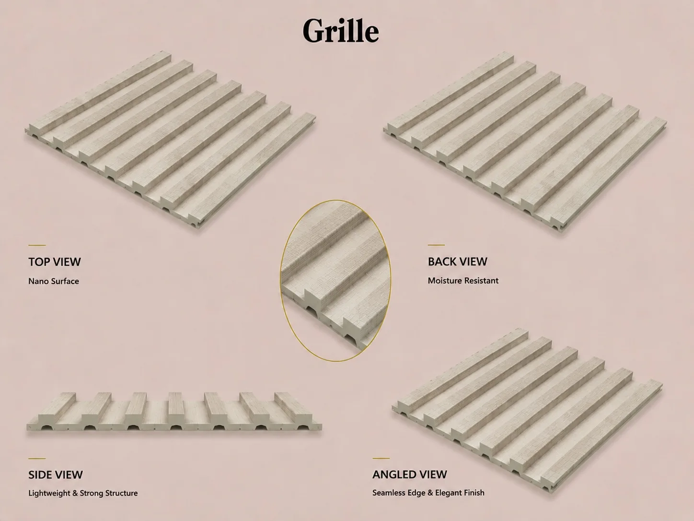

Are PVC Wall Panels Good? Uses, Limits and Buyer Checks
PVC wall panels are popular because they combine decorative finishes with fast installation, easy cleaning and moisture resistance. For overseas buyers, their real value is the ability to serve renovation, retail and project markets with one flexible product category.

PVC wall panels are a practical choice for bathrooms, apartments, hotels, offices, retail stores and other interior renovation projects where buyers value moisture resistance, decorative variety and shorter installation time. A successful product range also needs consistent surfaces, reliable profiles, matching trims and export-ready packaging.
Comparing a specific claim such as waterproofing, bathroom use, fire performance or installation over tiles? Start with the wall panel buyer FAQ based on common Google questions, then confirm the exact SKU and installation system.
Why PVC wall panels attract so much market attention
Customers in many markets want interiors that look finished without the labor, dust and long project time associated with traditional wet trades. PVC wall panels provide a pre-finished surface and can cover a wall quickly when the substrate and installation system are suitable.
For distributors, this is more than a construction product. It is a flexible sales category. A range can include marble looks, wood grains, solid colors, fluted profiles and matching trims, allowing one showroom to address budget renovation and design-focused projects.
Where are PVC wall panels commonly used?
Product selection should start with the room and customer, not only with a color card. Common applications include:
- Bathroom and laundry-area wall renovation
- Rental apartments and fast residential upgrades
- Hotel rooms, corridors and guest bathrooms
- Retail stores, showrooms and reception areas
- Office feature walls and commercial interiors
- Ceilings and utility spaces when the selected profile is suitable
Exterior use, direct-water zones and regulated commercial environments require product-specific confirmation. The panel, joint, trim, substrate and local code should be considered as one system.
Are PVC wall panels waterproof?
PVC material does not absorb water in the same way as gypsum board, MDF or natural wood. This makes it useful in humid interiors and easier to maintain after everyday splashes and stains.
However, a water-resistant panel is not automatically a waterproof room. Final performance depends on sealed joints, corners, trims, penetrations, the condition of the wall behind the panels and installer workmanship. Buyers should ask suppliers for the correct installation method instead of relying on a single “waterproof” claim.
PVC panels vs tiles, wood panels and WPC panels
| Material | Good fit | Main advantage | Buyer consideration |
|---|---|---|---|
| PVC wall panels | Fast renovation, humid interiors, retail ranges | Lightweight, easy to clean, broad decorative choice | Check surface, profile, joint, trims and packing |
| Tiles | Traditional bathrooms and hard-surface projects | Established finish with strong surface hardness | More labor, wet work and installation time |
| Wood-based panels | Warm residential and premium interiors | Natural appearance | Moisture and deformation control |
| WPC panels | Fluted feature walls and mid-range upgrades | Stronger wood-look positioning | Usually a different price and application tier |
Many distributors carry both PVC and WPC because they serve different price levels and design expectations. The goal is not to claim one material is always better, but to build a range customers can understand.
What should importers check before buying?
Surface and color consistency
Decorative panels are visual products. Compare physical samples under realistic showroom light and agree how the approved surface will control bulk production.
Profile, dimensions and joint fit
Products that look similar in photos may have different internal structures, edges and installation behavior. Check the profile together with trims and accessories.
Export packaging
Long decorative panels need protection against scratches, corner damage and carton deformation during loading, shipping and local distribution.
A practical starting range
Start with proven fast-moving finishes, a few premium options and matching accessories. A focused first range is easier to display, explain and replenish than dozens of unrelated designs.
How PVC panels can grow into a complete product line
PVC wall panels can be combined with WPC fluted panels, UV marble boards, SPC flooring, PU stone panels and accessories. This allows distributors to serve whole-room renovation instead of competing on one panel price.
Luvie supports coordinated product and mixed-container planning so buyers can review related categories, samples, packaging and market positioning through one supply relationship.
Why buyers work with Luvie Industry
Luvie brings 25 years of wall-panel manufacturing experience, service across 50+ countries, ISO 9001 quality management, OEM/ODM support and mixed-container coordination. Our team helps buyers connect product selection with samples, accessories, packaging and repeat-order records.
Price, MOQ, production time and destination-specific documents are confirmed for the selected product and order rather than presented as one universal promise.
Frequently asked questions
Are PVC wall panels good for bathrooms?
They are commonly used in humid interiors because PVC does not absorb water like wood-based boards. Correct joints, trims, sealant and substrate preparation remain important.
Are PVC wall panels better than tiles?
PVC panels are lighter and faster to install; tiles provide a hard traditional surface. The right choice depends on project conditions, labor, budget and local preference.
Can PVC wall panels be used in commercial projects?
Yes, they are used in hotels, offices, shops and rental properties. Confirm the relevant specification, installation and local compliance requirements.
Can I request samples before ordering?
Yes. A sample kit helps your team review texture, color direction, profile, edge quality, trim matching and showroom potential.
Can PVC panels be ordered with WPC or SPC products?
Mixed product planning can be discussed for buyers who want a broader wall-and-floor collection. The feasible mix depends on product dimensions and loading plans.
What is the MOQ and production time?
Both depend on the selected SKU, finish, packaging, quantity and current factory schedule. Send your target market and product requirements for order-specific confirmation.
Start with a product catalog or sample discussion.
Tell us your country, customer type, preferred application and estimated order plan. We will help you identify a practical PVC, WPC and accessory combination.
WhatsApp +30 6947135317